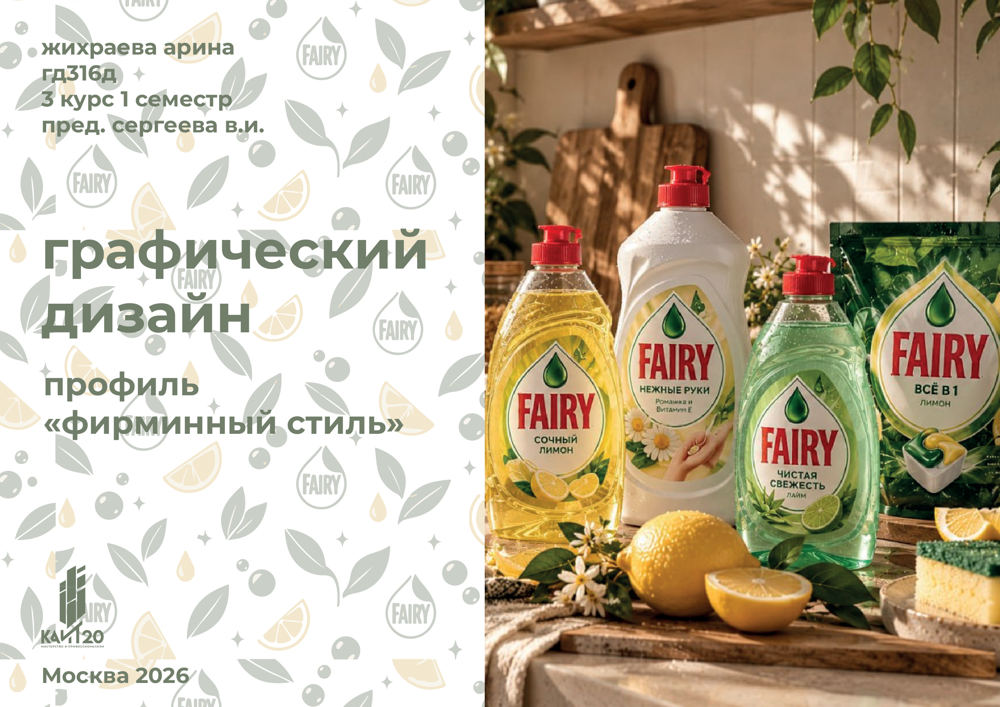
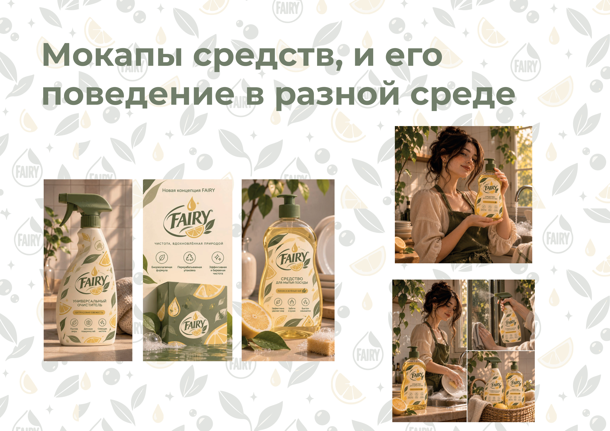
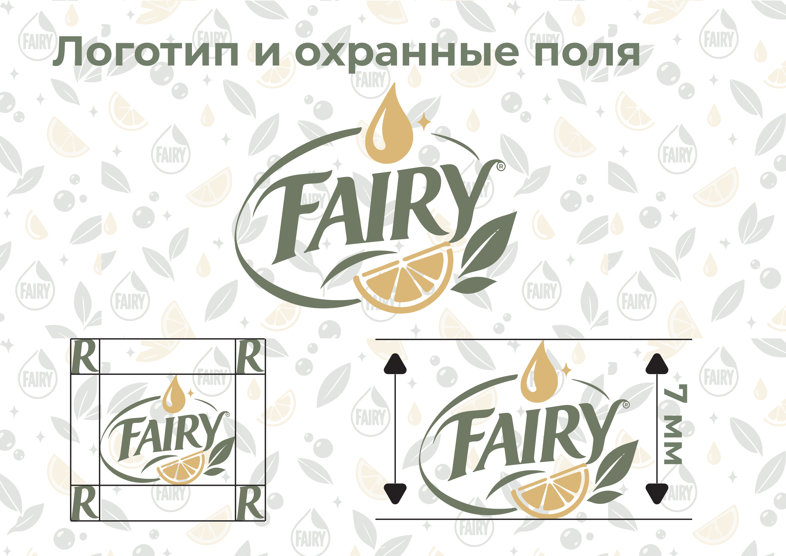
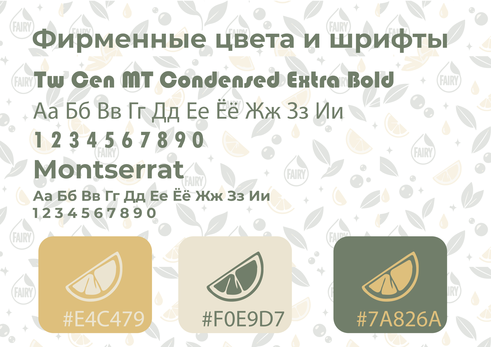
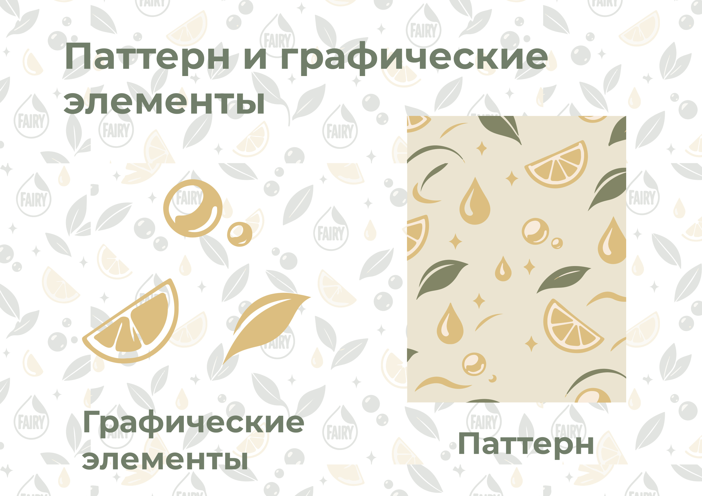
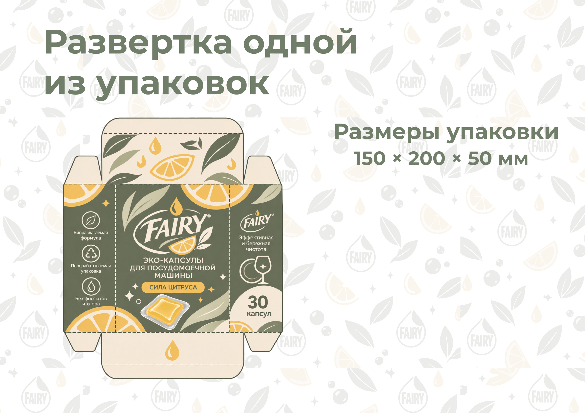
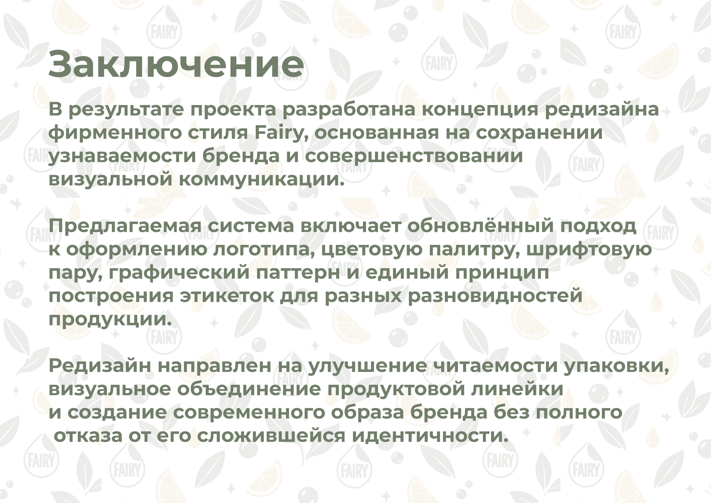

01 / BRAND IDENTITY & PACKAGING
FAIRY✳
Редизайн фирменного стиля и упаковки бренда бытовой химии.

Знакомый бренд.
Новая система.
Fairy — известный бренд бытовой химии, специализирующийся прежде всего на средствах для мытья посуды. В проекте исследуется, как обновить визуальный образ продуктовой линейки, сохранив узнаваемость бренда.
Упростить восприятие,
не потеряв характер.
В анализе исходной упаковки выделены три направления для улучшения: визуальная перегруженность, недостаточная системность между разновидностями продукта и невыстроенная информационная иерархия.

Обновлённый визуальный образ продуктовой линейки
Чистота, свежесть
и простота.
Концепция строится на свободном пространстве, простой геометрии, плавных формах и контрастной типографике. Сохраняются фирменный логотип Fairy и узнаваемые цветовые ассоциации, но композиция этикетки становится спокойнее, а основные сведения — заметнее.
VISUAL SYSTEM / 01
Элементы системы.



Одна логика —
разные продукты.
Для продуктовой линейки предложен единый принцип оформления: общая композиционная структура, повторяющиеся графические элементы и понятное разделение разновидностей продукции.

Развёртка упаковки · 150 × 200 × 50 мм
РЕЗУЛЬТАТ
Узнаваемость
с новым ритмом.
В результате проекта разработана концепция редизайна фирменного стиля Fairy: обновлённый подход к логотипу, цветовой палитре, шрифтовой паре, графическому паттерну и построению этикеток. Редизайн направлен на улучшение читаемости упаковки и визуальное объединение продуктовой линейки без полного отказа от узнаваемой идентичности бренда.
